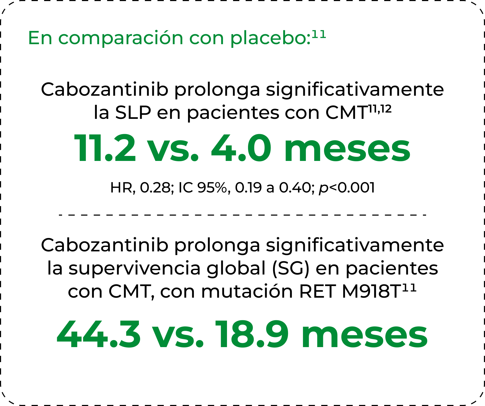

TIME-LINE DE SU DESARROLLO CLÍNICO
Revisión de los resultados finales de la fase III11
Revisión de los resultados finales de la fase III11
Cabozantinib es un potente inhibidor
de MET, VEGFR2, RET, entre otros
receptores de tirosina cinasa como
KIT, AXL, FLT3, y Tie-2.8-12
de MET, VEGFR2, RET, entre otros
receptores de tirosina cinasa como
KIT, AXL, FLT3, y Tie-2.8-12

Su eficacia contra CMT ha sido
demostrada en un ensayo clínico
prospectivo, aleatorizado y
controlado por placebo.11

demostrada en un ensayo clínico
prospectivo, aleatorizado y
controlado por placebo.11